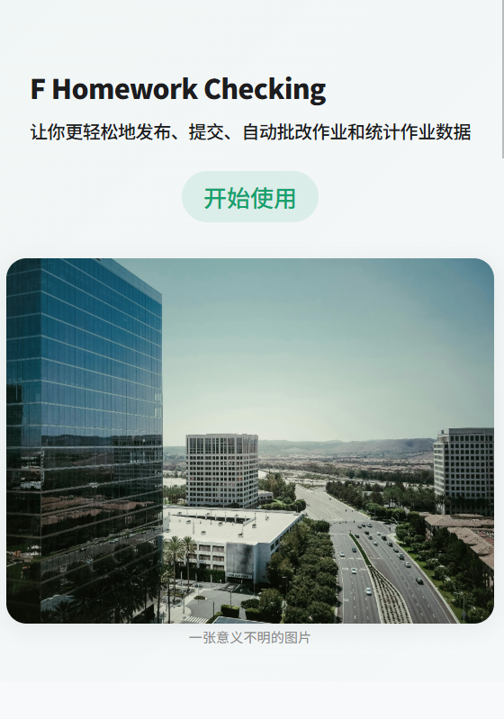
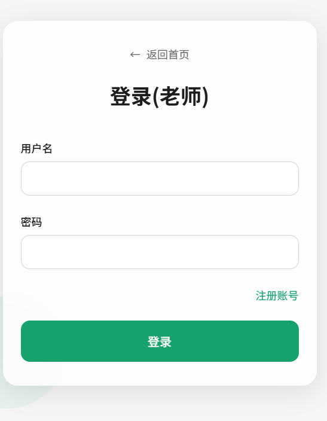
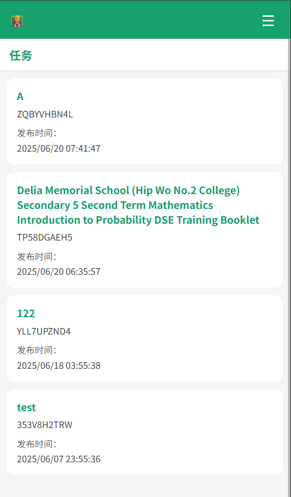
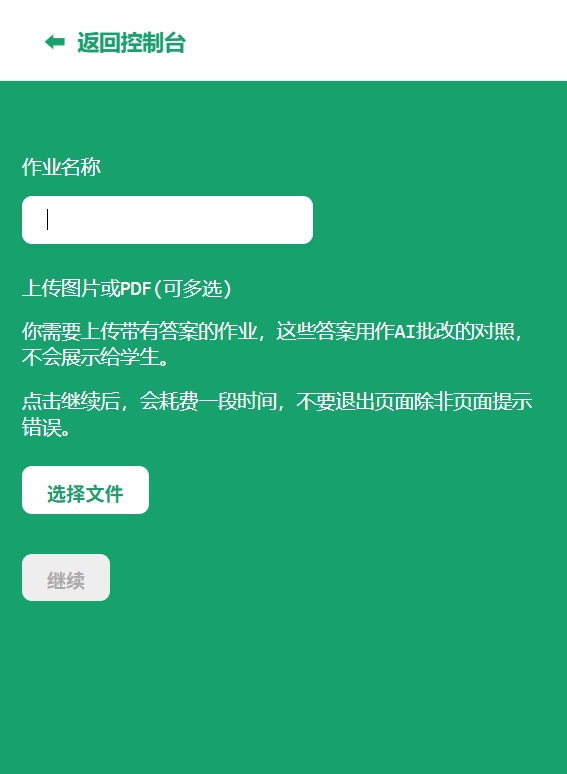
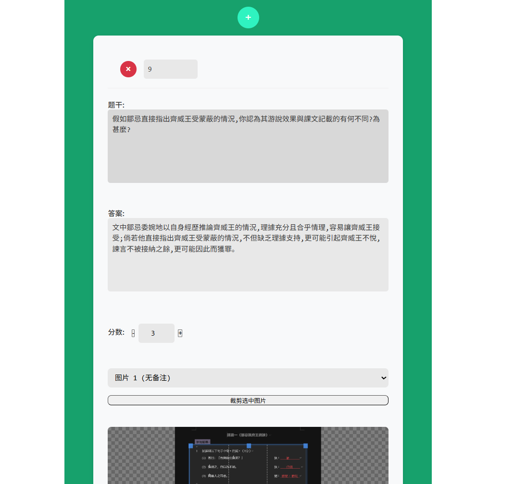
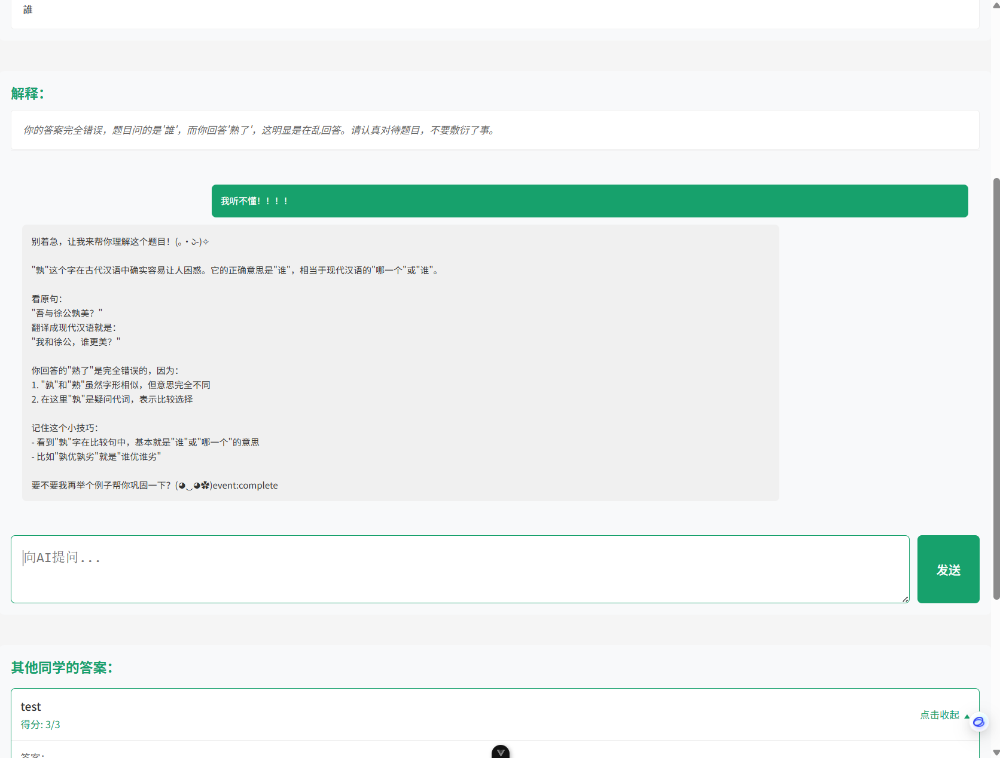

怎麼用
1. 打開網站
如果在電腦上遇到頁面空白的問題，按下f12刷新頁面然後拍照反饋給王sir。
2. 按下開始使用，選擇右邊的老師圖標。

3. 註冊、登錄

4. 進入老師儀錶盤後，按下發佈作業按鈕，手機端點擊頁面右上角。

5. 你需要在這個頁面上傳一個或一組*帶有答案*的試卷圖片或PDF，答案可以和題目混合，或是集中在試卷尾部。

6. 按下發佈作業按鈕，這可能耗費*1-2分鐘*，然後你會收到題目預覽。
你可以在這裡編輯題目、答案、分值，為題目分配圖片，添加或刪除題目。

7. 按下提交，拿到任務碼，把它發布給學生。
8. 返回老師儀錶盤，點擊發佈的任務卡片，查看提交情況和數據，
包括每一題正確率、平均分、每個學生提交答案、分數、反饋信息，學生分數排布、學生是否改正。
對於學生
1. 按下開始使用，選擇左邊的學生圖標。
2. 註冊、登錄
3. 點擊開始新任務(手機端在右上角)，輸入老師給的任務碼，按下開始
